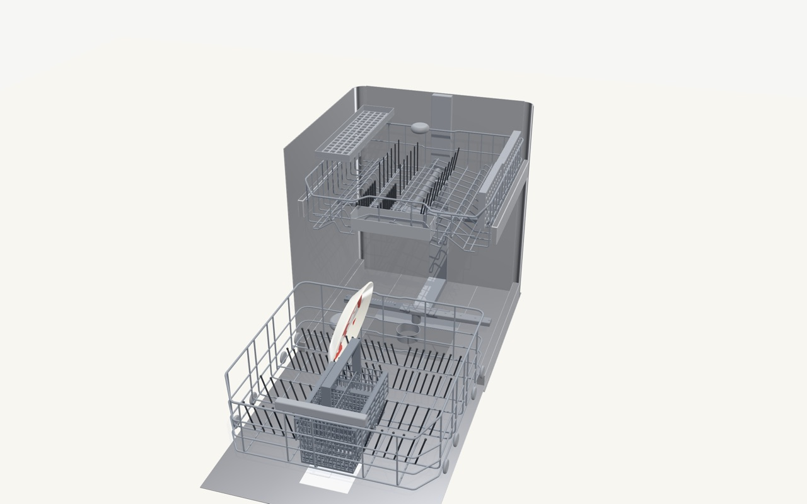
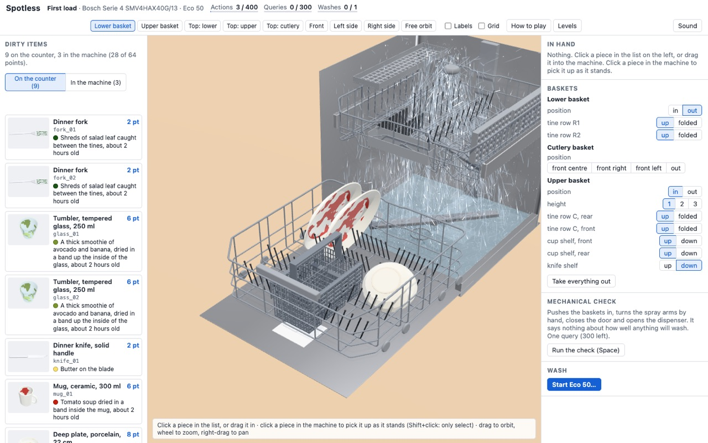
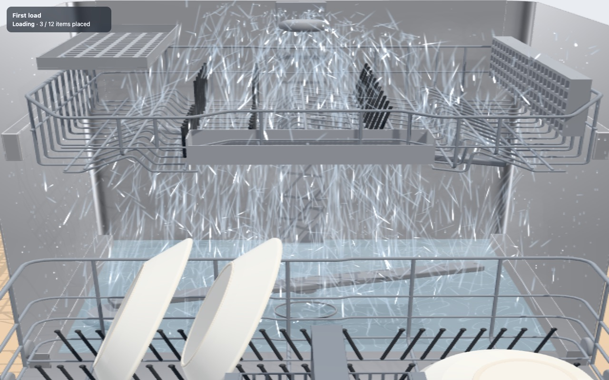
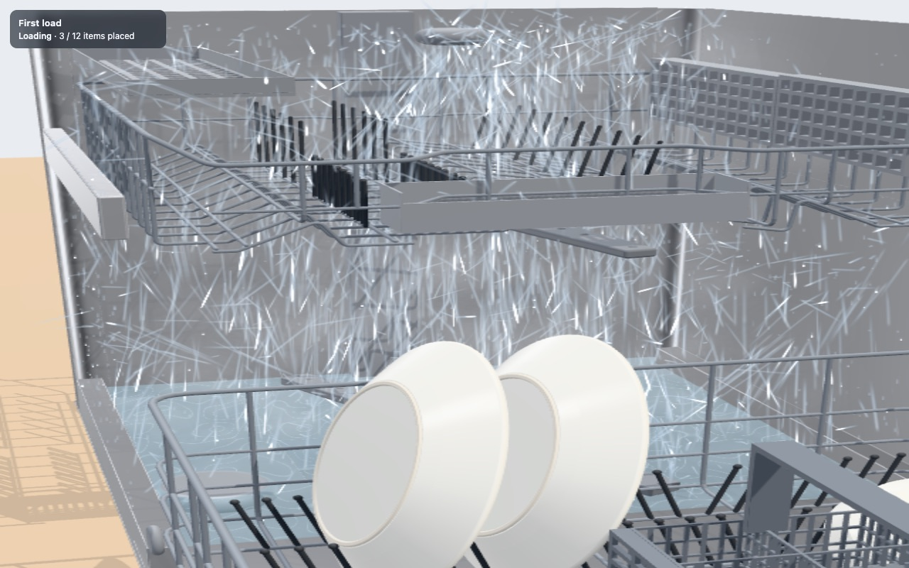
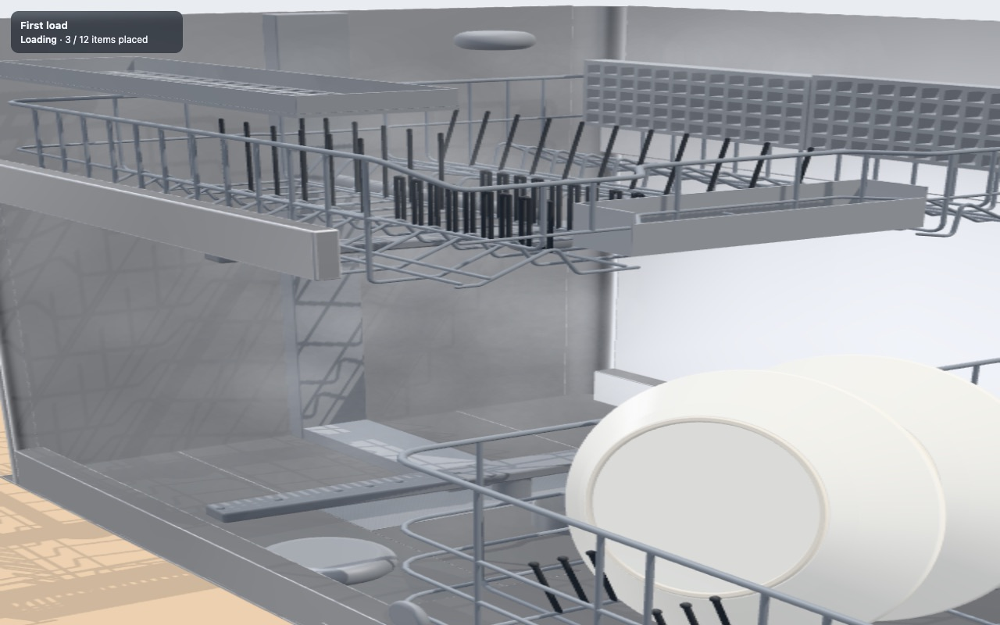
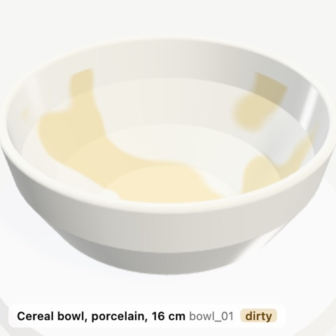
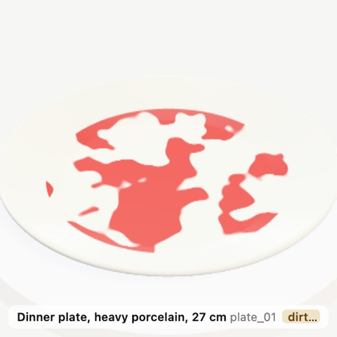
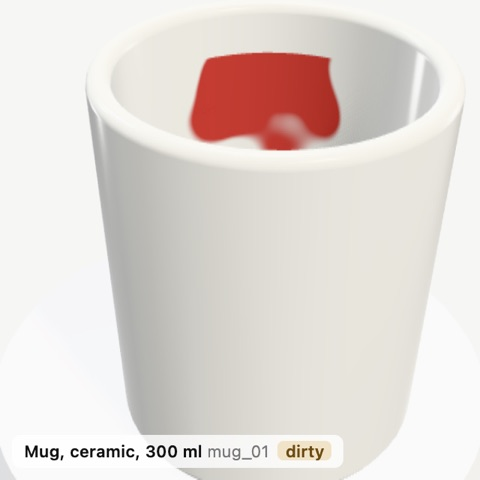
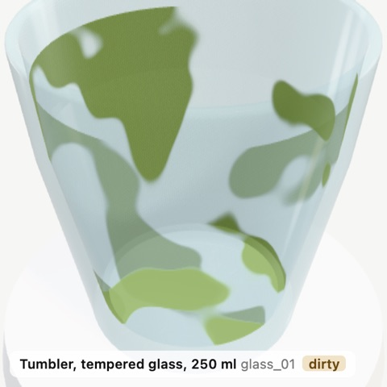
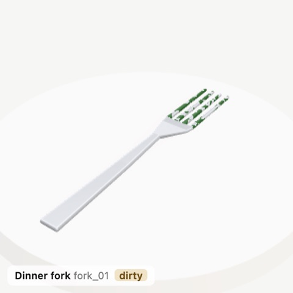

SparkleTeam: Towards Recursive Self Home Improvement
Lifting a weak open model at dishwasher loading with a self-rewriting team
1Independent Researcher, @_elevenarms 2Anthropic
Crusoe × Cerebral Valley Recursive Agents Hackathon · 17 October 2026
Built at the Cerebral Valley × Crusoe Recursive Agents Hackathon · Inference by Crusoe Managed Inference
We surrounded a deliberately weak open loader with a team of open NVIDIA Nemotron models that rewrites its own prompts, playbook, tools and structure, and kept an edit only when a physical wash simulation said it helped. On held-out levels with items and soils it had never seen, the evolved team scored 63.7% against 46.0%: +17.8 points on four drills (n = 4, p ≈ 0.31). The winning edits were three short rules. Every structural change lost.
Abstract
How best to load a dishwasher is a combinatorial, physical problem with an unusually honest reward: a simulated wash decides which items come out clean [Composo 2026]. We use it as a testbed for SparkleTeam, a self-improving multi-agent system built only from open, inexpensive models. A deliberately weak loader (Nemotron-3.5-Super-VL, thinking off) is surrounded by a planner, a vision critic, a coach and a librarian, all open Nemotron models on Crusoe serverless inference. Between generations the team rewrites a typed genome of its own prompts, playbook, tool policy and structure, and a deterministic gatekeeper keeps an edit only if it beats the incumbent on paired, fresh tasks. On a held-out exam whose levels contain item kinds and soils never seen in training, the evolved team scores 63.7% against 46.0% for the bare loader (+17.8 pp). We report what changed, what it cost, and why the evidence is thin.
{{FINDING_HEADLINE}}
After centuries of folk practice, the Division has measured whether a bowl should face the spray arm or the ceiling. Same machine, same programme, same soils; only the orientation changes. n = {{FINDING_N}}.
Measured in the DishwasherBench wash simulation (Bosch SMV4HAX40G, Eco 50, one capsule). The Division regrets that this was not settled sooner.
A team that rewrites itself
§3 of the paperThe reward is physics. DishwasherBench places items with deterministic rigid-body physics through 13 MCP tools, then a GPU wash simulation of one real machine decides which come out clean. An item scores only if it is clean. The reward is objective, deterministic and unfakeable: a bowl mouth-up under a dead spot of the spray arm stays dirty however eloquently the agent describes it.
The team
| Role | Model (open, on Crusoe) | Job |
|---|---|---|
| Loader | Nemotron-3.5-Super-VL (no thinking) | plays, 13 tools |
| Planner | Nemotron-3.5-Super-VL (low effort) | per-item plan |
| Critic | Nano-Omni-Reasoning-30B (thinking) | post-mortem |
| Coach | Nemotron-3-Super-120B-A12B | genome edits |
| Librarian | Nemotron-3-Nano-30B-A3B + code | memory, brief |
| Gatekeeper | deterministic statistics | accept / reject |
Table 1 · Roles and models. The judge is code on purpose: the team can change how it plays, never how it is graded.
One generation of the loop
Genome & typed edits
A genome is an immutable record of everything the team may rewrite: three prompts (Planner, loader preamble, Critic); a playbook of at most 25 tagged rules with evidence links to lessons; team switches (usePlanner, useMemoryBrief, preflightCheck, the brief's lesson count); and loader settings (reasoning effort, images, denied tools, turn limit). The Coach can change it only through six typed operations:
add_ruleedit_ruleremove_ruleset_promptset_teamset_loaderEach proposal carries a title and a falsifiable hypothesis. Ids hash content and parent, so lineage is diffable. The baseline G0 is the bare loader: no planner, no brief, no preflight, an empty playbook.
The Gatekeeper's paired rule
Candidate C and incumbent I play the same fresh validation drills with the same seeds. Over the drills P both played validly, with share xt on drill t:
δ = 0.03; void if |P| < 3. Agent failures score what they scored; provider or harness errors are replayed on the same task and seed up to twice. Because loading and washing are deterministic, pairing cancels drill difficulty: the same baseline scored 88% on one drill and 0% on another in a single evaluation.
Three-layer memory
Every training episode, item by item: kind, soils, rack, stance, clean, retained water, residue.
Lessons from the Critic and from placement statistics, deduplicated on merge, with support s and contradiction c counts.
Every genome and every Gatekeeper decision, with per-task scores. Exam episodes are stored apart and never read back.
A Beta(1,1) posterior mean, shrunk towards ignorance while evidence is thin: one supporting episode gives 0.54, five of five 0.72, twenty of twenty 0.90.
Results
run 2026-10-17T20-49-49-evolve| Exam drill | Avail. | G0 | Champ. | Δ (pp) |
|---|---|---|---|---|
| Family #0 | 59 | 48 | 42 | −10.2 |
| Baking #1 | 71 | 28 | 63 | +49.3 |
| Party #2 | 77 | 15 | 32 | +22.1 |
| Family #3 | 71 | 31 | 38 | +9.9 |
| Total points | 278 | 122 | 175 | +53 pts |
| Mean share | 46.0% | 63.7% | +17.8 |
Table 2 · Held-out Points per 12-item drill for G0 and the champion G2-704108, same drills and seeds, fast tier. Neither side had an invalid episode. The champion loads 35 items against 23 (of 48), with clean-of-loaded rates of 91% (32/35) and 100% (23/23): the gain is commitment, bought with a few dirty items.
The genome diff
Fig. 3 · The champion differs from G0 by three playbook rules and nothing else. R2.1 and R2.2 restate the top memory lessons (κ = 0.69).
Gatekeeper decisions
| G | Proposal (Coach's title) | Inc. | Cand. | W/L | Δ̄ | Verdict |
|---|---|---|---|---|---|---|
| 1 | Enable Planner | .449 | .363 | 1/2 | −0.086 | rej. |
| 1 | Memory Brief, expanded lessons* | .449 | .471 | 1/2 | +0.021 | rej. |
| 2 | Enable preflight check | .443 | .334 | 1/2 | −0.109 | rej. |
| 2 | Avoid poor-performing bowl placement R1.1 “Do not place cereal_bowl_vitrelle_159 on upper_rack/mouth_down_tilted_45; instead put it on lower_rack on_edge or leave it out if unstable.” | .443 | .695 | 3/0 | +0.251 | acc. |
| 3 | Memory brief, focused lessons | .618 | .327 | 1/2 | −0.291 | rej. |
| 3 | Rules for glasses & cutlery R2.1 “Glasses and tumblers: upper_rack, mouth_down (or slight forward tilt).” R2.2 “Cutlery (forks, knives, spoons): cutlery_basket, upright.” | .618 | .775 | 2/1 | +0.157 | acc. |
Table 3 · Mean validation share of incumbent and candidate on 3 paired drills (Tutorial, Lunch, Weeknight; fresh seeds each generation, so levels compare only within a generation). Margin δ = 0.03. Every structural edit (planner, memory brief, preflight) was rejected; two memory-derived rules were kept. *Accepted at +0.129 under the corrected replay rule (see Limitations).
Choosing a weak loader
| Loader (thinking) | Share | Loaded/clean | Turns | Time |
|---|---|---|---|---|
| DeepSeek-V4.1-Flash (off) | 100% | 12/12 | 21 | 90 s |
| Qwen3.8-27B (off) | 100% | 12/12 | 19 | 199 s |
| GLM-5.3-Flash (low) | 93% | 10/10 | 40 | 97 s |
| DeepSeek-V4-Flash (off) | 89% | 12/11 | 40 | 89 s |
| gpt-oss-120b (low) | 49% | 8/7 | 40 | 154 s |
| Nemotron-3-Nano-30B (low) | 41% | 5/5 | 40 | 870 s |
| Nemotron-3.5-Super-VL (off) | 21% | 3/3 | 40 | 129 s |
| Nemotron-3-Nano-30B (off) | 0% | 1/0 | loops | |
| Nemotron-3-Nano-Omni (off) | 0% | 2/0 | loops |
Table 4 · One smoke per model on the same 12-item Breakfast drill (seed 7, 61 points, 40-turn cap). A saturated loader leaves the Gatekeeper nothing to measure, so we take the weakest that still plays: all it loads is clean, but it runs out of turns.
Robustness: the 12-drill exam
A larger held-out exam over 12 drills, same protocol (G0 vs. champion, same seeds, fast tier).
Cost
22.7 min of evolution plus about 7 min of exam on 8 game servers. The loader made 1,481 requests (38.24M input tokens, 83.7% cached; 0.43M output); the other roles 21 requests and under 0.1M tokens. Inference cost: about $0.12 for the Critic, Coach and Librarian at listed prices; Super-VL's price is not listed (at Super-120B's rates the loader would cost about $7.7).
Mission control
apps/studioDishwasherBench, by Composo





Cosmetic water in the web client (our change; it touches neither simulation nor scoring). The verdicts come from Composo's GPU wash simulation.





Fig. 8 · Items before the wash, on the object turntable. An item scores its points only if it comes out clean.
More from the Division
forthcoming{{INSIGHTS_ABLATIONS}}
{{INSIGHTS_TRANSFER}}
{{INSIGHTS_PHYSICS_MAP}}
Honest limitations
- Small nFour exam drills with a single seed each, so +17.8 pp is a point estimate; a one-sided sign test on 3 wins of 4 gives p = 5/16 ≈ 0.31. This is a demonstration, not a statistically established effect. The champion lost one exam drill (−10.2 pp, Family #0).
- Fast tierWashes use the fast tier (4 mm blocks rather than 2 mm), whose verdicts agree with the official tier's on 91% of the standard load and 97% of pieces on the course levels. A few percent of verdicts differ.
- Replay bug, correctedG0's first generation-1 Weeknight attempt (0 of 87; a pasta pot blocked the door, so the wash was refused) was wrongly classed as invalid and replayed (to 0.322). Under the corrected rule, fixed after the run, the incumbent's mean is 0.342, the Memory Brief would have been accepted at +0.129 and the Planner rejected at +0.021. The bug made the Gatekeeper more conservative; the champion's lineage (generations 2 and 3) was not affected.
- One machineOne dishwasher, programme and detergent; the exam tests transfer to new items, soils and loads, not new physics.
- Sampling & selectionPairing removes task variance, not policy variance. Keeping the best of several candidates biases validation gains upwards; hence the held-out exam. δ = 0.03 over 3 drills is about one average item on one drill, far below the noise of a sampling loader.
Whose work is what
Composo · DishwasherBench
The benchmark, simulator, calibration, levels and harness are Composo's DishwasherBench (MIT).
- 3D model of one real Bosch SMV4HAX40G; deterministic rigid-body physics (Jolt); 13 MCP tools.
- GPU wash simulation (WebGPU via Dawn) of the Eco 50 programme with one capsule, calibrated on washes of the real machine (
anchored-v8.owner-capsule). - Clean threshold derived from the IEC 60436 scale; course levels 1–7.
Ours · SparkleTeam
- The self-improving team, its genome and six typed edits.
- Three-layer memory with shrunken Bayesian confidence.
- The Gatekeeper's paired acceptance rule and the held-out exam protocol.
- The Studio visualiser.
- Cosmetic water, watch and turntable changes to the benchmark's web client that touch neither simulation nor scoring.
We thank Composo for releasing DishwasherBench (MIT), Crusoe for inference (Crusoe Managed Inference) and NVIDIA for the open Nemotron models.
BibTeX
@misc{rauchwerk2026sparkleteam,
title = {{SparkleTeam}: Towards Recursive Self Home Improvement},
author = {Rauchwerk, Dave and Claude},
year = {2026},
month = oct,
howpublished = {\url{https://github.com/elevenarms/RSHI}},
note = {Crusoe $\times$ Cerebral Valley Recursive Agents Hackathon}
}